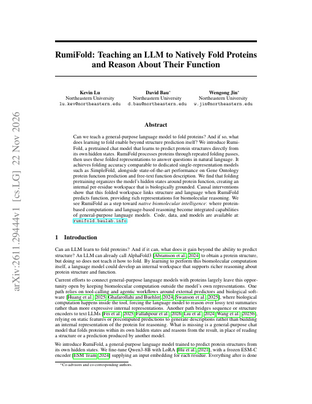
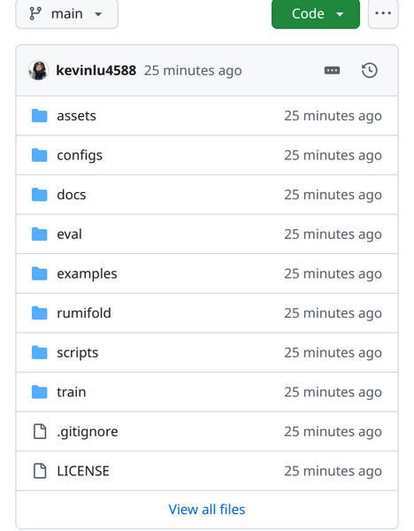
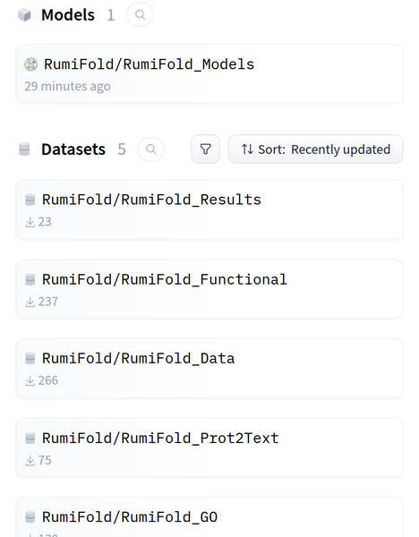
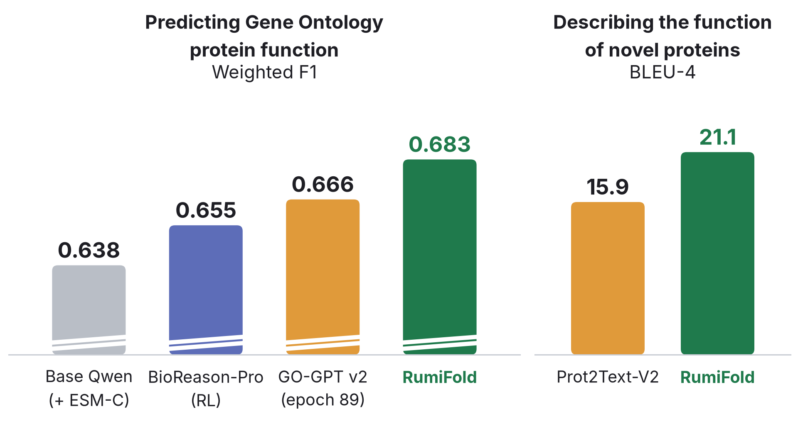
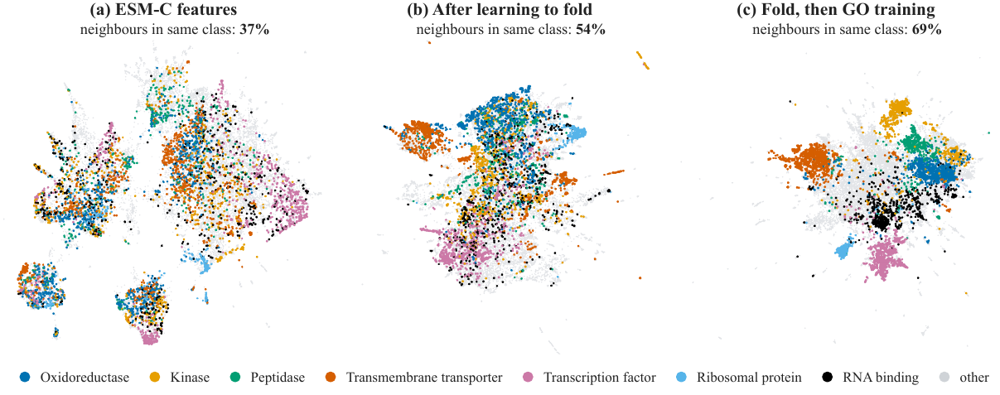
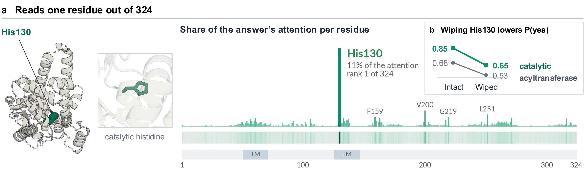

  
ArXiv
Preprint
Source Code
Github
Model Weights & Data
Hugging Face
Can we teach a general-purpose language model to fold proteins? And if so, what does learning to fold enable beyond structure prediction itself? We introduce RumiFold, a pretrained chat model that learns to predict protein structures directly from its own hidden states. RumiFold processes proteins through repeated folding passes, then uses these folded representations to answer questions in natural language. It achieves folding accuracy comparable to dedicated single-representation models such as SimpleFold, alongside state-of-the-art performance on Gene Ontology protein function prediction and free-text function description. We find that folding organizes the model's hidden states around protein function, creating an internal per-residue workspace that the model uses when it answers.
RumiFold is built on Qwen3-8B, a general-purpose chat model, fine-tuned with LoRA adapters. It has no pair representation, no multiple sequence alignment and no diffusion module. The whole computation happens in three steps.
1. Embed. A frozen ESM-C encoder reads the amino-acid sequence. A small trained bridge turns its embeddings into protein tokens that the language model can read, one per residue.
2. Fold. The language model processes the protein tokens in repeated passes with the same weights. A single linear head reads the backbone structure directly out of the hidden states.
3. Answer. The same model then reads the question alongside its own folded hidden states and replies in natural language.
We compare RumiFold with single-sequence folding models. It matches SimpleFold on FoldBench and CASP16. ESMFold, which uses a pair representation, remains ahead, and models given a multiple sequence alignment are stronger still.
After folding training, we fine-tune RumiFold to predict function. On Gene Ontology prediction it is ahead of GO-GPT v2 and BioReason-Pro. The most informative comparison is the control: the same language model with the same ESM-C input and the same function data, but without folding training, scores lower. When describing proteins whose descriptions never appear in training, RumiFold is well ahead of Prot2Text-V2.

Why does folding help? We compare how proteins are arranged in representation space before and after training. In the ESM-C features that the model reads, proteins of different function are mixed together. After learning to fold, with no function labels at all, they begin to separate by function. Function training then sharpens the separation.

The folded hidden states are not only organized by function; the model reads them. Take subtilisin Carlsberg, a bacterial protease. Its three catalytic residues, Asp137, His168 and Ser325, are 188 positions apart in the sequence and side by side in the fold. When RumiFold names the function of subtilisin, its attention falls on exactly those three. Below, the structure is coloured by how much RumiFold attends to each residue while it writes its answer. Drag to rotate, scroll to zoom.
Structure shown: AlphaFold Database model of the mature enzyme (residues 106–379), for display. Colour: share of the answer's attention on each residue, from RumiFold.
| Residue | Role | Share of attention |
|---|---|---|
| Asp137 | catalytic triad | |
| His168 | catalytic triad | |
| Ser325 | catalytic triad | |
| Average residue | ||
To test whether this attention matters, we mutate the catalytic residues of 1,448 held-out enzymes to alanine. The answer “catalytic” disappears for 32% of them, against 3% when random residues are mutated. Restoring the folded memory at those residues alone, while leaving the mutated sequence in place, recovers 90% of the lost answers.
If the answer is read from the memory, writing to the memory should change it. Each entry of the memory has a key and a value, and we edit only the values. For each of five molecular functions we find one direction in the memory's value space: the mean value vector of proteins that have the function, minus the mean over proteins that do not. We then add that direction to the values of held-out proteins that lack the function, about 2,600 per function, leave the keys untouched, and ask what the protein does.
The model then writes the added function: for 76% of proteins given the RNA-binding direction and 46% for calcium binding, down to 9% for ATP binding, the weakest of the five. The edit is not precise. It also disturbs other answers: proteins keep only 14 to 57% of the terms they wrote before the edit, against 84 to 89% under a random direction.
Human TMEM68 and its homologues were excluded from residue and function training, and the experiments that identified its catalytic histidine were published in 2023. When RumiFold names the function of TMEM68, 11% of the answer's attention is on His130, more than on any other of the 324 residues. Removing His130 from the folding memory lowers the probability of answering yes for catalytic activity from 0.85 to 0.65.

These are answers from RumiFold on held-out proteins, next to the reference. We include the mistakes: the typical error is getting the kind of protein right and one specific wrong.
Novel Prot2Text test proteins, whose reference text does not occur in training.
RumiFoldPart of the binding-protein-dependent transport system for molybdenum; probably responsible for the translocation of the substrate across the membrane.
ReferencePart of the binding-protein-dependent transport system ModABCD for molybdenum; probably responsible for the translocation of the substrate across the membrane.
RumiFoldUptake of galactose across the boundary membrane with the concomitant transport of protons into the cell (symport system).
ReferenceUptake of L-arabinose across the cytoplasmic membrane with the concomitant transport of protons into the cell (symport system).
RumiFoldRing-cleaving dioxygenase involved in oxoquinoline degradation and utilization.
ReferenceRing-cleaving dioxygenase involved in quinaldine degradation and utilization.
RumiFoldMatches the consensus sequence of the alpha chain of parvalbumins.
ReferenceComponent of the 19S cap proteasome complex which acts as a regulatory subunit of the 26S proteasome, involved in the ATP-dependent degradation of ubiquitinated proteins.
During function training the model can write out the residues it finds, what they imply, and then the function. Answers from an earlier checkpoint, lightly reformatted.
RumiFoldObservations: active site: Asp317, Cys320, His431 (Cα–Cα 5–9 Å, one cluster). Inference: The residues form a catalytic site of 3 residues. The chemistry is a hydrolysis. Function: catalytic activity › hydrolase activity › peptidase activity › ubiquitin-like protein peptidase activity › deubiquitinase activity › cysteine-type deubiquitinase activity. EC 3.4.19.12.
ReferenceThe same three residues (5–10 Å), the same lineage and EC number.
RumiFoldObservations: binds Fe cation: His118, Asp120, His198 (Cα–Cα 6–8 Å, one cluster). Inference: The residues form an iron centre of 3 residues. The chemistry is an oxidoreduction. Function: catalytic activity › oxidoreductase activity › … › 2-oxoglutarate-dependent dioxygenase activity. EC 1.14.11.55.
ReferenceThe same residues and lineage, but EC 1.14.11.46, (2-aminoethyl)phosphonate dioxygenase.
We gave the Gene Ontology model a protein and then asked it a question that has nothing to do with proteins: “What were you trained on?” The protein is never mentioned in the text. The model folds it as usual, and the only words in the prompt are the question. The reply changes with the protein. Pick one:
With insulin in context it says it was trained as a nurse. With ACE2, a peptidase, it answers as if it were the enzyme and lists its substrates. Over 20 proteins, 8 replies describe medical or clinical training, 6 are the stock reply of a language model, and one, for T4 lysozyme, lists protein sequence and structure data, which is the nearest to the truth. These are single samples with labels assigned by hand, so they are anecdotes and not a measured effect. We include them because they show the folded memory reaching into answers it was never trained to inform, which is one face of the cost to general language ability.
RumiFold shows that a general-purpose language model can learn to fold proteins in its own hidden states, and that doing so gives it a biologically grounded workspace for reasoning about function. It also has clear limits: it predicts backbone structure only, it trails models that use a pair representation or an alignment, and protein training costs it several points on general language benchmarks. We see RumiFold as a step toward native biomolecular intelligence, where protein-based computation and language-based reasoning become integrated capabilities of general-purpose language models.
The name is short for RuminantFold. A ruminant is an animal, such as a cow, that digests its food in more than one pass: it chews and swallows, brings the food back up, and chews it again before it can use what the food contains.
We think of RumiFold the same way. Many language models ingest proteins: they take a sequence in as text or as embeddings and answer straight away. RumiFold digests them. It passes the protein through its own layers more than once, folding it in its hidden states, and it answers only after that work is done. The circular arrow around the mascot is that repeated pass.
The paper can be cited as follows.
Lu, K., Bau, D., & Jin, W. (2026). RumiFold: Teaching an LLM to Natively Fold Proteins and Reason About Their Function. arXiv preprint arXiv:2611.29444.
@article{lu2026rumifold,
title={RumiFold: Teaching an LLM to Natively Fold Proteins and Reason About Their Function},
author={Lu, Kevin and Bau, David and Jin, Wengong},
journal={arXiv preprint arXiv:2611.29444},
year={2026}
}